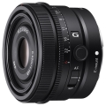
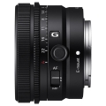
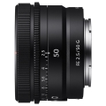
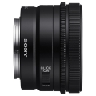
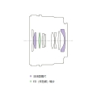
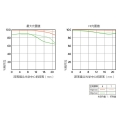

器材库 > 35mm画幅AF定焦镜头 > FE 50/2.5 G

详细规格
发布日期
2021-03-23
厂家推荐价格
4,699.00 （人民币）
焦距
50mm
最大光圈
f/2.5
最小光圈
f/22
视角（对角）
47°
镜头结构
9片/9组
非球面镜片
2片
低/超低色散镜片
1片
光圈叶片
7片
最近对焦距离
AF：35cm / MF：31cm
最大放大倍率
AF：0.18x / MF：0.21x
驱动马达
线性马达
滤镜口径
49mm
镜头卡口
Sony E
防抖
否
颜色
黑色
尺寸
68×45mm
重量
174g
附件
遮光罩，镜头前盖，镜头后盖
备注
防尘防潮设计
该产品暂无存档的网友点评
产品图 / 样片
FE 50/2.5 G

FE 50/2.5 G

FE 50/2.5 G

FE 50/2.5 G

FE 50/2.5 G

FE 50/2.5 G
评测 / 相关文章
- 详细内容 （存档）
- 小巧三剑客 索尼FE 50mm F2.5 G、FE 40mm F2.5 G以及FE 24mm F2.8 G测评
- ［资讯］按需选择才是王道 泡菜热评三饼干新镜头 （原站已下线）
- ［资讯］饼干也精彩 索尼三款全画幅G镜头点评 （原站已下线）